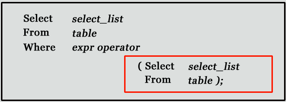

Keyboard shortcuts:
N/СпейсNext Slide
PPrevious Slide
OSlides Overview
ctrl+left clickZoom Element
If you want print version => add '
?print-pdf' at the end of slides URL (remove '#' fragment) and then print.
Like: https://wwwcourses.github.io/...CourseIntro.html?print-pdf
Вложени SELECT операции (Subqueries)
Created for
Created by
Overview
Overview
- A subquery is a SQL query nested inside a larger query.
- Using subqueries in a query helps to isolate each part of a statement.
- They provide alternative ways to perform operations that would otherwise require complex joins and unions.
- In MySQL subquery can be nested inside a SELECT, INSERT, UPDATE, DELETE, SET, or DO statement or inside another subquery
- A subquery is usually added within the WHERE Clause of another SQL SELECT statement. 
- The subquery (inner query) executes once before the main query (outer query) executes.
- The outer query uses the subquery result.
{kind=link}
Syntax
- Here is an example statement that shows the major points about subquery syntax as specified by the SQL standard and supported in MySQL:
- A subquery can be used almost anywhere that expression is used and must be closed in parentheses
DELETE FROM t1
WHERE s11 > ANY
(SELECT COUNT(*) FROM t2
WHERE NOT EXISTS
(SELECT * FROM t3
WHERE ROW(5*t2.s1,77)=
(SELECT 50,11*s1 FROM t4 UNION SELECT 50,77 FROM
(SELECT * FROM t5) AS t5)));
Subqueries types
- A subquery can return:
- scalar (a single value)
- single row
- single column
- table (one or more rows of one or more columns)
- These are called scalar, column, row, and table subqueries.
Example - Scalar Subquery
- A scalar subquery is a subquery that returns exactly one value.
- We can use it almost anywhere a single column value or literal is legal. But you can't use it in LIMIT or LOAD DATA statements.
SELECT *
FROM books
WHERE author_id = (
SELECT id FROM authors WHERE lname='Adams'
);
Subqueries in Comparison Operators
Subqueries in Comparison Operators
Comparison Operators: Overview
- Comparison Operators are use to compare values or rows.
- MySQL supports many Comparison Operators and Functions, like:
- Comparison operations result in a value of 1 (TRUE), 0 (FALSE), or NULL.
- These operations work for both numbers and strings. Strings are automatically converted to numbers and numbers to strings as necessary.
| Name | Description |
|---|---|
> |
Greater than operator |
>= |
Greater than or equal operator |
< |
Less than operator |
<>, != |
Not equal operator |
<= |
Less than or equal operator |
<=> |
NULL-safe equal to operator |
= |
Equal operator |
BETWEEN ... AND ... |
Whether a value is within a range of values |
Comparison Operators: Examples
- Let's have next table
- Select rows for which there is no profit:
- Select rows for which the profit is bigger that 20:
+----+------------+---------------+
| id | cost_price | selling_price |
+----+------------+---------------+
| 1 | 100 | 115 |
| 2 | 50 | 45 |
| 3 | 200 | 200 |
| 4 | 50 | 100 |
+----+------------+---------------+
SELECT *
FROM sales
WHERE cost_price>=selling_price;
+----+------------+---------------+
| id | cost_price | selling_price |
+----+------------+---------------+
| 2 | 50 | 45 |
| 3 | 200 | 200 |
+----+------------+---------------+
SELECT *
FROM sales
WHERE selling_price - cost_price>20;
+----+------------+---------------+
| id | cost_price | selling_price |
+----+------------+---------------+
| 4 | 50 | 100 |
+----+------------+---------------+
Syntax
- The most common use of a subquery is in the form:
- Where:
- operand1 - can not be a subquery
- comparison_operator is any of:
LIKE = > < >= <= <> != <=> - Consider next example which finds all the rows in table t1 for which the column1 value is equal to a maximum value in table t2. This can not be done with JOIN:
operand1 comparison_operator (subquery)
SELECT * FROM t1
WHERE column1 = (
SELECT MAX(column2) FROM t2
);
Subqueries with ANY, ALL, IN, SOME
Subqueries with ANY, ALL, IN, SOME
Subqueries with ANY
operand comparison_operator ANY (subquery)
- The ANY keyword must follow the comparison operator.
- It return TRUE if the comparison is TRUE for ANY of the values in the column that the subquery returns
Subqueries with ANY: Example
- Let's have next tables:
- Let's find values in t1.c1 which are bigger than ANY value in t2.c2
+----+
| c1 |
+----+
| 1 |
| 2 |
| 3 |
| 8 |
+----+
+----+
| c2 |
+----+
| 1 |
| 4 |
| 5 |
| 6 |
+----+
SELECT *
FROM t1
WHERE c1 > ANY (
SELECT c2 FROM t2
);
+----+
| c1 |
+----+
| 2 |
| 3 |
| 8 |
+----+
Subqueries with ANY: Example (books)
- Find authors who published books after 1950
- Note, that the results retrieved are not the same as with:
SELECT *
FROM authors as a
WHERE a.id = ANY(
SELECT b.author_id FROM books as b
WHERE b.pub_year>1950
);
+----+---------+----------+------------+------------+
| id | fname | lname | birth_year | death_year |
+----+---------+----------+------------+------------+
| 1 | Kurt | Vonnegut | 1922 | 2007 |
| 2 | Douglas | Adams | 1952 | 2001 |
+----+---------+----------+------------+------------+
SELECT *
FROM authors AS a
JOIN books AS b ON a.id=b.author_id
WHERE b.pub_year>1950;
ANY vs IN
- IN is semantically equivalent to
= ANY, but IN can take an expression list, while ANY cannot. - When IN is used with with a subquery it is an alias for
= ANY - Next two queries are equivalent:
- Also,
NOT INis not an alias for<> ANY, but for<> ALL. - Not that next 2 queries retrieve different results:
SELECT *
FROM t1
WHERE c1 IN (
SELECT c2 FROM t2
);
SELECT *
FROM t1
WHERE c1 = ANY (
SELECT c2 FROM t2
);
SELECT *
FROM t1
WHERE c1 NOT IN (
SELECT c2 FROM t2
);
+----+
| c1 |
+----+
| 2 |
| 3 |
| 8 |
+----+
SELECT *
FROM t1
WHERE c1 <> ANY (
SELECT c2 FROM t2
);
+----+
| c1 |
+----+
| 1 |
| 2 |
| 3 |
| 8 |
+----+
ANY == SOME
- In MySQL
SOMEis an alias forANY - Word
SOMEis most close to natural languages semantics in next queries: - both retrieving same results:
SELECT *
FROM t1
WHERE c1 <> ANY (
SELECT c2 FROM t2
);
SELECT *
FROM t1
WHERE c1 <> SOME (
SELECT c2 FROM t2
);
+----+
| c1 |
+----+
| 1 |
| 2 |
| 3 |
| 8 |
+----+
Subqueries with ALL
- The word ALL, which must follow a comparison operator.
- It means "return TRUE if the comparison is TRUE for ALL of the values in the column that the subquery returns"
operand comparison_operator ALL (subquery)
Subqueries with ALL: Example
- Let's have next tables:
- Let's find values in t1.c1 which are different than ANY value in t2.c2
+----+
| c1 |
+----+
| 1 |
| 2 |
| 3 |
| 8 |
+----+
+----+
| c2 |
+----+
| 1 |
| 4 |
| 5 |
| 6 |
+----+
SELECT *
FROM t1
WHERE c1 <> ALL (
SELECT c2 FROM t2
);
+----+
| c1 |
+----+
| 2 |
| 3 |
| 8 |
+----+
Row Subqueries
Row Subqueries
Overview
- Remember, that:
- Scalar subqueries return a single value.
- Column subqueries return a column of values.
- A row subquery is a subquery that returns a single row and can thus return more than one column value
- Row subqueries can be used with:
= > < >= <= <> != <=>operators.
Example
- Let's have next tables:
- Let's find rows in a which match a row in b for which c3 value is 1
+----+----+
| c1 | c2 |
+----+----+
| 1 | 2 |
| 2 | 1 |
| 3 | 4 |
| 8 | 2 |
+----+----+
+----+----+
| c3 | c4 |
+----+----+
| 1 | 2 |
| 4 | 1 |
| 5 | 3 |
| 8 | 2 |
+----+----+
SELECT * FROM a
WHERE (c1,c2) = (SELECT c3, c4 FROM b WHERE c3=1);
+----+----+
| c1 | c2 |
+----+----+
| 1 | 2 |
+----+----+
ROW constructor
- A row constructor is used for comparisons with subqueries that return two or more columns
- ROW constructors are useful in next case:
ROW(col1,col2, ..., colN)
-- which is equivalent to
(col1,col2, ..., colN)
SELECT * FROM t1 WHERE (column1,column2) = (1,1);
-- which is equivalent to
SELECT * FROM t1 WHERE column1 = 1 AND column2 = 1;
Subqueries with EXISTS or NOT EXISTS
Subqueries with EXISTS or NOT EXISTS
Overview
- When a subquery is used with the EXISTS or NOT EXISTS operator, a subquery returns a Boolean value of TRUE or FALSE
- If a subquery returns any rows at all, EXISTS subquery is TRUE, and NOT EXISTS subquery is FALSE.
- Usually EXISTS subquery is of the form
SELECT * FROM table, but MySQL ignores the SELECT list in such a subquery, so it makes no difference if we writeSELECT 42 FROM table - Example: find authors who have published books after 1950 year:
SELECT * FROM table WHERE EXISTS (subquery);
SELECT * FROM table WHERE NOT EXISTS (subquery);
SELECT a.fname,a.lname
FROM authors AS a
WHERE EXISTS (
SELECT * FROM books AS b
WHERE pub_year>1950 AND a.id=b.author_id
);
+---------+----------+
| fname | lname |
+---------+----------+
| Kurt | Vonnegut |
| Douglas | Adams |
+---------+----------+
Examples
- Let's have next tables:
- Find users who have address records:
- Find users who doesn't have any address records
+----+-------+
| id | name |
+----+-------+
| 1 | Ivan |
| 2 | John |
| 3 | Merry |
| 4 | Pesho |
+----+-------+
+----+---------+----------+
| id | user_id | city |
+----+---------+----------+
| 1 | 1 | Sofia |
| 2 | 3 | Paris |
| 3 | 1 | Lodon |
| 4 | <null> | New York |
+----+---------+----------+
SELECT u.name
FROM users AS u
WHERE EXISTS (
SELECT * FROM addresses AS a
WHERE u.id=a.user_id
);
-- Result: Ivan, Merry
SELECT u.nane
FROM users AS u
WHERE NOT EXISTS (
SELECT * FROM addresses AS a
WHERE u.id=a.user_id
);
-- Result: John, Pesho
Correlated Subqueries
Correlated Subqueries
- A correlated subquery is a subquery that uses the data from the outer query.
- A correlated subquery can not be executed as a standalone query
- A correlated subquery is evaluated once for each row in the outer query.
- Correlated queries are more efficient than JOINS or VIEWS only if either the outer or inner query returns a small records. Otherwise => use JOINS or VIEWS.
- Example:
SELECT *
FROM users AS u
WHERE NOT EXISTS (
SELECT * FROM addresses AS a
WHERE u.id=a.user_id
);
Subquery in the FROM clause
Subquery in the FROM clause
Overview
- When you use a subquery in the FROM clause, the result set returned from a subquery is used as a temporary table.
- Consider next standard query:
- We can select MAX(book_count) if we use it as a subquery in FROM:
SELECT author_id, COUNT(author_id) as book_count FROM books AS b
GROUP BY b.author_id;
-- OUTPUT:
+-----------+------------+
| author_id | book_count |
+-----------+------------+
| 1 | 6 |
| 2 | 8 |
| 3 | 21 |
+-----------+------------+
SELECT MAX(t.book_count) AS max_book_count
FROM (
SELECT author_id, COUNT(author_id) as book_count FROM books AS b
GROUP BY b.author_id
) as t;
+----------------+
| max_book_count |
+----------------+
| 21 |
+----------------+
Notes
- Using subquery in FROM clause should generally be avoided if you can rewrite your query in a different way. Some of the reasons are:
- No indexes can be used on a table returned by subquery in FROM, i.e. a temporary table in memory
- A subquery in the FROM clause can't be correlated subquery as it can't be evaluated per row of the outer query.
These slides are based on
customised version of
framework